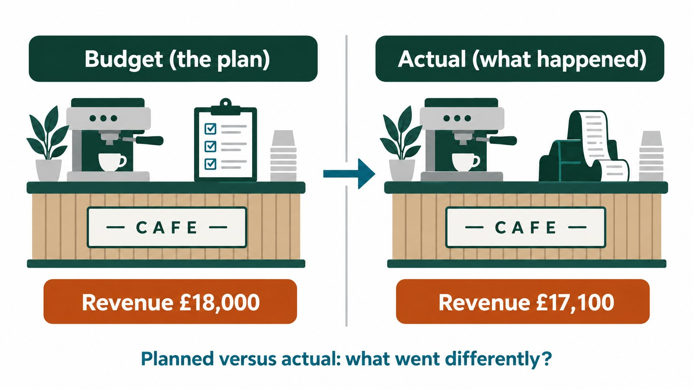

A-Level Business: Budget Variances at Harbour Street Cafe
Students calculate the variances between a cafe’s March budget and actual figures, decide which ones deserve investigation, link them to causes and choose how to set April’s budget.
A Level Business · Edexcel 9BS0, Theme 2 · Free PDF and Word · No sign up

Illustration created with an AI image tool to show the situation. All figures are those used in the lesson.
A-Level-Business-Budget-Variances-Cafe-Student
Student pages. 4 pages: the figures, the tasks and answer space. No answers.
Calculate seven variances in pounds and as a percentage of budget, then the profit variance
Apply an investigation rule (more than £250 or more than 20% of budget) to decide which variances matter
Match the owner’s notes to the variances, then choose between a historical and a zero-based budget for April and name one difficulty of budgeting
What the teacher gets
A lesson plan for about 55 minutes of tasks, with a shorter 45-minute version. Allow longer in the timetable for handing out and feedback
Worked answers for every question, including how a 10% ingredient price rise hides behind lower sales volume
Indicative guidance for the written recommendation. It is not an exam board mark scheme and carries no marks or grades
Editable Word versions of both files, so you can change the business or the figures
Specification
Edexcel A level Business 9BS0, Theme 2, section 2.2.4 Budgets: purpose of budgets, historical and zero-based budgets, variance analysis and difficulties of budgeting. Checked against the Pearson specification, Issue 1, September 2014. The cafe and every figure are fictional. The favourable and adverse sign convention and the investigation rule are conventions chosen for this lesson. This is not a Pearson resource, and the lesson has not yet been tested in a classroom.